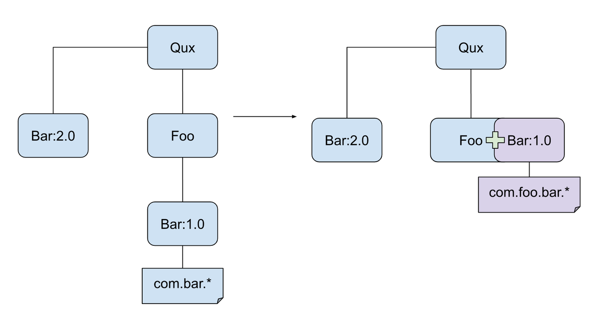

I found the maven-shade-plugin being used in someone's pom.xml. I've never
used maven-shade-plugin before (and I'm a Maven n00b) so I tried to understand
the reason for using this and what it does.
I looked at the Maven docs, however I can't understand this statement:
This plugin provides the capability to package the artifact in an uber-jar,
including its dependencies and to shade - i.e. rename - the packages of some
of the dependencies.
The documentation on the page doesn't seem very newbie-friendly.
What is an "uber jar?" Why would someone want to make one? What's the point of
renaming the packages of the dependencies? I tried to go through the examples
on the maven-shade-plugin apache page such as "Selecting contents for Uber
Jar," but I still can't understand what is being accomplished with "shading."
Any pointers to illustrative examples/use-cases (with an explanation of why
shading was required in this case - what problem is it solving) would be
appreciated. Lastly, when should I use the maven-shade-plugin?
Answer
Uber JAR, in short, is a JAR containing everything.
Normally in Maven, we rely on dependency management. An artifact contains only
the classes/resources of itself. Maven will be responsible to find out all
artifacts (JARs etc) that the project depending on when the project is built.
An uber-jar is something that takes all dependencies, and extracts the content
of the dependencies and puts them with the classes/resources of the project
itself, in one big JAR. By having such an uber-jar, it is easy for execution,
because you will need only one big JAR instead of tons of small JARs to run
your app. It also eases distribution in some cases.
Just a side-note: avoid using uber-jar as a Maven dependency, as it is ruining
the dependency resolution feature of Maven. Normally we create an uber-jar
only for the final artifact for actual deployment or for manual distribution,
but not for putting to Maven repository.
Update: I have just discovered I haven't answered one part of the question :
"What's the point of renaming the packages of the dependencies?". Here are
some brief updates that will hopefully help people having similar questions.
Creating an uber-jar for ease of deployment is one use case of the shade
plugin. There are also other common use cases which involve package renaming.
For example, I am developing Foo library, which depends on a specific
version (e.g. 1.0) of Bar library. Assuming I cannot make use of other
version of Bar lib (because API change, or other technical issues, etc). If
I simply declare Bar:1.0 as Foo's dependency in Maven, it is possible to
fall into a problem: A Qux project is depending on Foo, and also Bar:2.0
(and it cannot use Bar:1.0 because Qux needs to use new feature in
Bar:2.0). Here is the dilemma: should Qux use Bar:1.0 (which Qux's
code will not work) or Bar:2.0 (which Foo's code will not work)?
In order to solve this problem, developer of Foo can choose to use shade
plugin to rename its usage of Bar, so that all classes in Bar:1.0 jar are
embedded in Foo jar, and the package of the embedded Bar classes is
changed from com.bar to com.foo.bar. By doing so, Qux can safely depends
on Bar:2.0 because now Foo is no longer depending on Bar, and it is
using its own copy of the "altered" Bar located in another package.

Suggest
I was wondering myself recently why elasticsearch shades and relocates a few
(but not all) of its dependencies. Here's an explanation from the project's
maintainer, @kimchy :
The shading part is intentional, the shaded libraries we use in
elasticsearch are for all intent and purpose part of elasticsearch, the
version used is tied closely into what elasticsearch exposes and how it uses
the library based on the internals of how the library works (and that
changes between versions), netty and guava are great examples.
Btw, I have no problem with actually providing several jars of
elasticsearch, one with lucene not shaded, and one with Lucene shaded. Not
sure how to do it with maven though. I don't want to provide a version that
does not shade netty/jackson for example, because of the deep intimiate
usage elasticsearch has with them (for example, using the upcoming
bufferring improvement with any previous version of netty except for the
current one will actually use more memory compared to using considerably
less).
--
https://github.com/elasticsearch/elasticsearch/issues/2091#issuecomment-7156766
And another here from drewr :
The shading is important to keep our dependencies (notably netty, lucene,
guava) close to our code so that we can fix an issue even if the upstream
provider lags behind. It's possible we will distributed modularized versions
of the code, which would help with your particular issue (#2091 for
example), but we can't simply remove the shaded dependencies at this time.
You can build a local version of ES for your purposes until there's a better
solution.
--
https://github.com/elasticsearch/elasticsearch/pull/3244#issuecomment-20125452
So, that's one use case. As for an illustrative example, below is how maven-
shade-plugin is used in elasticsearch's pom.xml (v0.90.5). The
artifactSet::include lines instruct it what dependencies to pull into the
uber JAR (basically, they are unzipped and and re-packaged alongside
elasticsearch's own classes when the target elasticsearch jar is produced. (In
case you didn't know this already, a JAR file is just a ZIP file that contains
the program's classes, resources, etc., and some metadata. You can extract one
to see how it's put together.)
The relocations::relocation lines are similar, except that in each case they
also apply the specified substitutions to the dependency's classes - in this
case, bringing them under org.elasticsearch.common.
Finally the filters section excludes some stuff from the target JAR that
oughtn't be in there - such as JAR metadata, ant build files, text files, etc.
that are packaged with some dependencies, but which don't belong in an uber
JAR.
<plugins>
<plugin>
<groupId>org.apache.maven.plugins</groupId>
<artifactId>maven-shade-plugin</artifactId>
<version>2.1</version>
<executions>
<execution>
<phase>package</phase>
<goals>
<goal>shade</goal>
</goals>
</execution>
</executions>
<configuration>
<minimizeJar>true</minimizeJar>
<artifactSet>
<includes>
<include>com.google.guava:guava</include>
<include>net.sf.trove4j:trove4j</include>
<include>org.mvel:mvel2</include>
<include>com.fasterxml.jackson.core:jackson-core</include>
<include>com.fasterxml.jackson.dataformat:jackson-dataformat-smile</include>
<include>com.fasterxml.jackson.dataformat:jackson-dataformat-yaml</include>
<include>joda-time:joda-time</include>
<include>io.netty:netty</include>
<include>com.ning:compress-lzf</include>
</includes>
</artifactSet>
<relocations>
<relocation>
<pattern>com.google.common</pattern>
<shadedPattern>org.elasticsearch.common</shadedPattern>
</relocation>
<relocation>
<pattern>gnu.trove</pattern>
<shadedPattern>org.elasticsearch.common.trove</shadedPattern>
</relocation>
<relocation>
<pattern>jsr166y</pattern>
<shadedPattern>org.elasticsearch.common.util.concurrent.jsr166y</shadedPattern>
</relocation>
<relocation>
<pattern>jsr166e</pattern>
<shadedPattern>org.elasticsearch.common.util.concurrent.jsr166e</shadedPattern>
</relocation>
<relocation>
<pattern>org.mvel2</pattern>
<shadedPattern>org.elasticsearch.common.mvel2</shadedPattern>
</relocation>
<relocation>
<pattern>com.fasterxml.jackson</pattern>
<shadedPattern>org.elasticsearch.common.jackson</shadedPattern>
</relocation>
<relocation>
<pattern>org.joda</pattern>
<shadedPattern>org.elasticsearch.common.joda</shadedPattern>
</relocation>
<relocation>
<pattern>org.jboss.netty</pattern>
<shadedPattern>org.elasticsearch.common.netty</shadedPattern>
</relocation>
<relocation>
<pattern>com.ning.compress</pattern>
<shadedPattern>org.elasticsearch.common.compress</shadedPattern>
</relocation>
</relocations>
<filters>
<filter>
<artifact>*:*</artifact>
<excludes>
<exclude>META-INF/license/**</exclude>
<exclude>META-INF/*</exclude>
<exclude>META-INF/maven/**</exclude>
<exclude>LICENSE</exclude>
<exclude>NOTICE</exclude>
<exclude>/*.txt</exclude>
<exclude>build.properties</exclude>
</excludes>
</filter>
</filters>
</configuration>
</plugin>
</plugins>